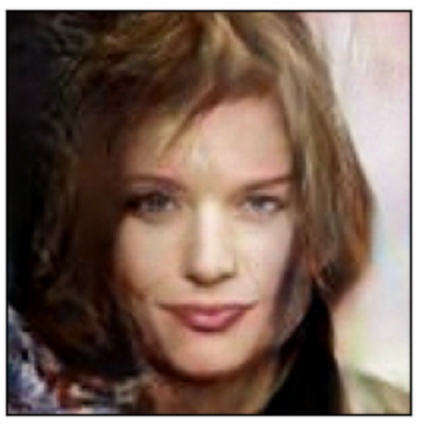

This project uses a generative adversarial network (GAN) trained on several thousand face images. The generator learns to produce realistic portraits by competing against a discriminator network that tries to distinguish real faces from generated ones.
This is still a work in progress — the results are promising but there's room to improve fidelity and consistency with further training and architectural refinements.